B&M's Gallery
Welcome to Our Gallery
Every picture tells a story, and every meal creates a memory. Explore the moments that make B&M’s Restaurant special—from our beautifully crafted dishes and talented chefs to our warm dining atmosphere and unforgettable experiences.
Restaurant Ambience
Experience the inviting atmosphere of B&M’s Restaurant. Our modern interior, comfortable seating, and warm lighting create the perfect setting for family dinners, friendly gatherings, business meetings, and special celebrations.
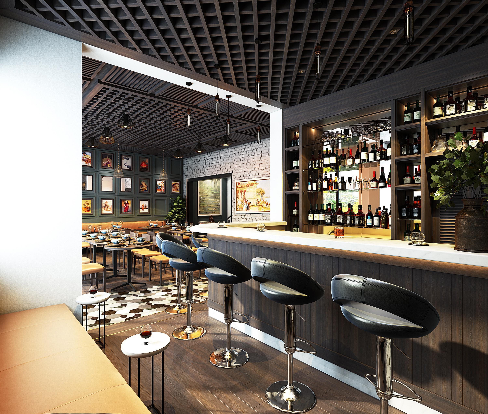
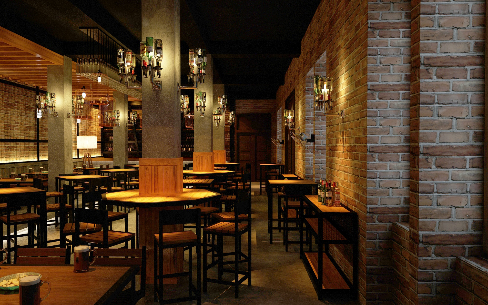


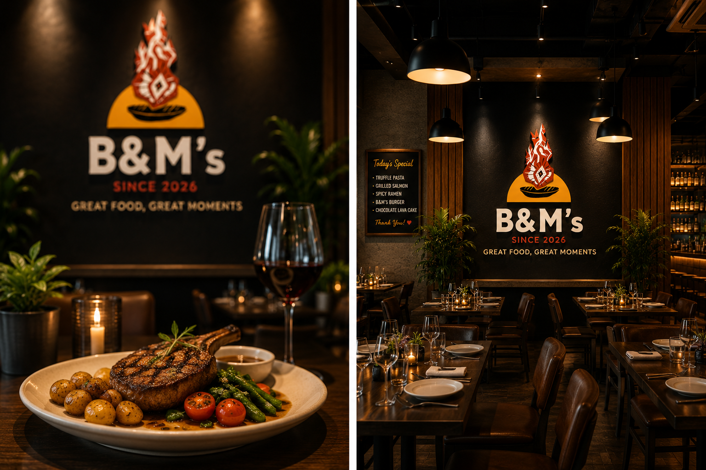
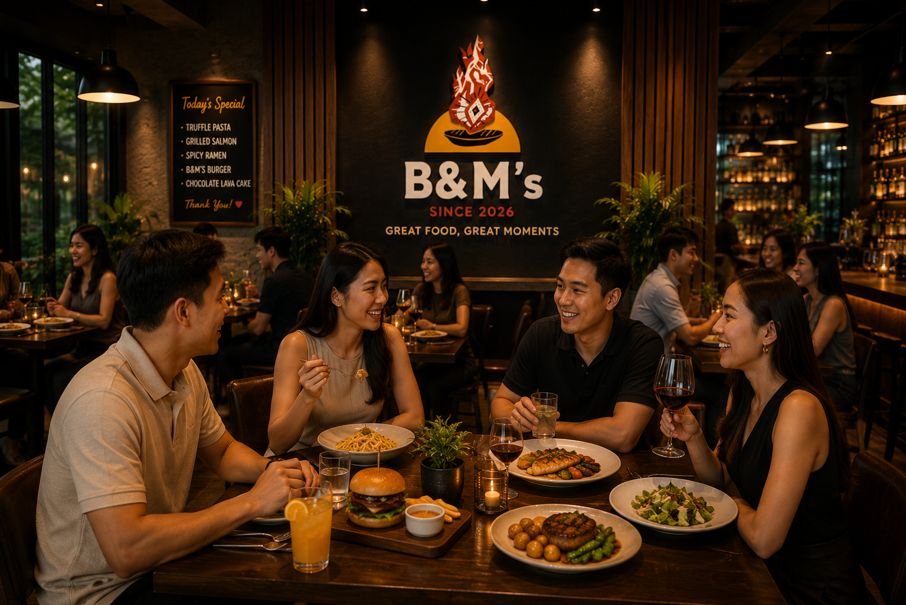
Signature Dishes
Every dish is carefully handcrafted using fresh ingredients and prepared with passion. From sizzling burgers and stone-baked pizzas to authentic ramen, sushi, burritos, and refreshing beverages, every plate is designed to delight both the eyes and the taste buds.


Our Culinary Team
Behind every great meal is a passionate team. Our talented chefs combine creativity, skill, and dedication to deliver an unforgettable dining experience for every guest.
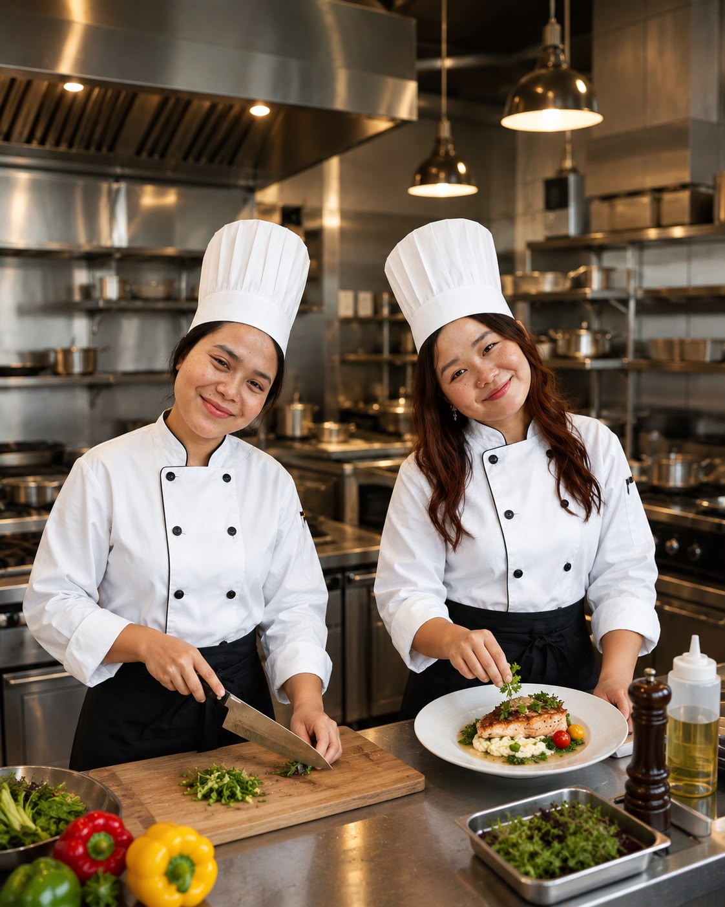
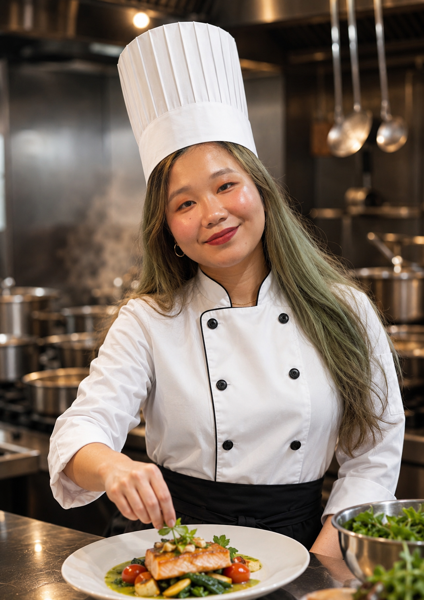
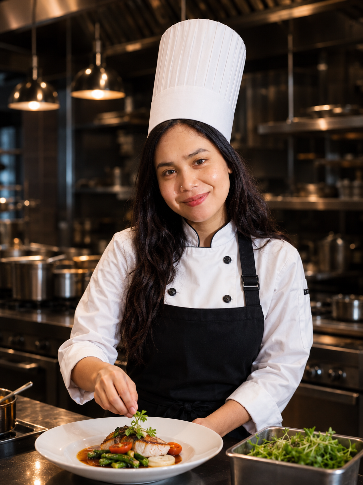
Our Hospitality Team
Great food deserves exceptional service. Our hospitality team is the face of B&M's Restaurant, ensuring every guest feels welcomed from the moment they arrive until the moment they leave. Their professionalism, friendly attitude, and attention to detail help create a comfortable and memorable dining experience for everyone.


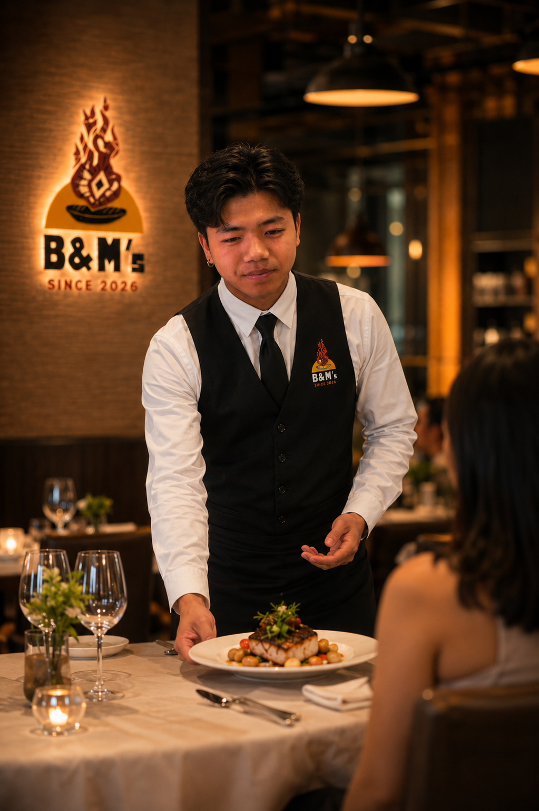
Special Celebrations
Whether it’s a birthday, anniversary, graduation, or family gathering, B&M’s Restaurant is the perfect place to celebrate life’s special moments.


Behind The Scenes
Take a glimpse inside our kitchen where passion, teamwork, and attention to detail come together to create every meal served at B&M’s Restaurant.


Visit Us
We invite you to experience the warmth, flavours, and hospitality that define B&M’s Restaurant. We look forward to creating unforgettable memories with you—one delicious meal at a time.
“Great food is best enjoyed together.”
B&M's Family
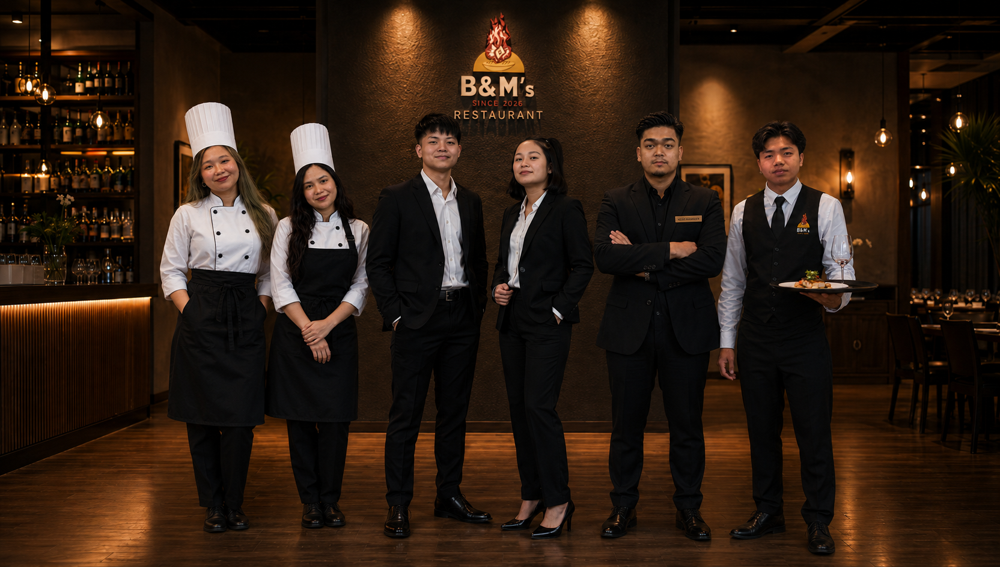
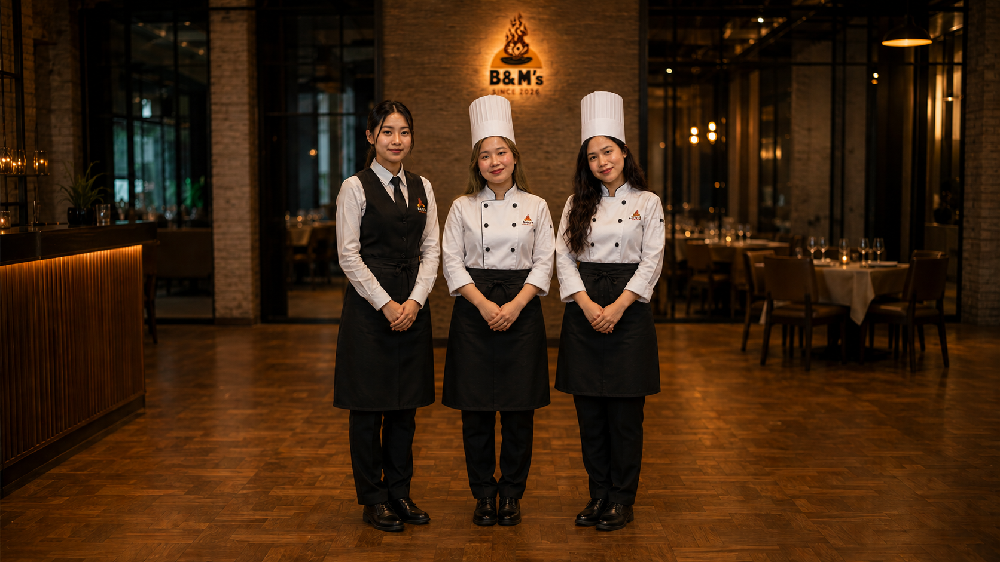
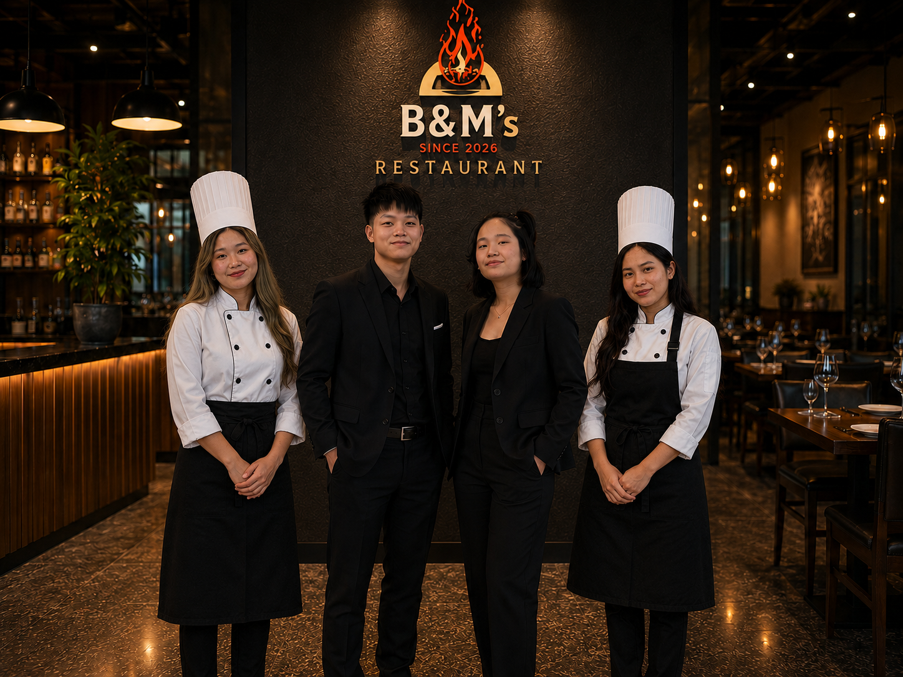